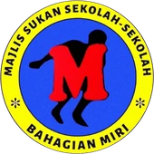

Cari sijil murid
Masukkan nombor kad pengenalan (MyKid) atau nombor sijil lahir murid. Sijil disediakan untuk pemenang tempat pertama hingga keempat bagi setiap kategori.

MAJLIS SUKAN SEKOLAH BAHAGIAN (MSSB) MIRI 2026
Semakan Sijil
Masukkan nombor kad pengenalan (MyKid) atau nombor sijil lahir murid. Sijil disediakan untuk pemenang tempat pertama hingga keempat bagi setiap kategori.